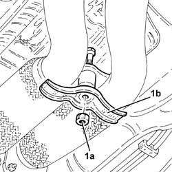
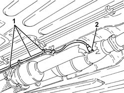
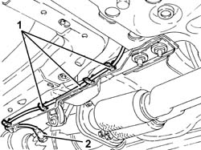
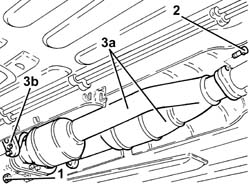
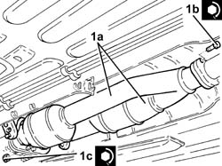
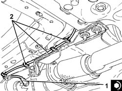
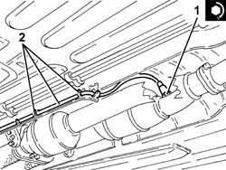

1080B65 catalytic converter assembly r r
- Path
- Procedures > 10 ENGINE > 1080 EXHAUST EMISSION CONTROL SYSTEM > 1080B exhaust emission control system > 1080B65 catalytic converter assembly r r
- Kind
- repair procedure (removal / refitting; the operation number is the code)
- Applies to
- engines: 2.5 V6, 3.2 V6; all production periods
- Interactive page
- https://sloeber94.github.io/elrnDB-a156/en/#/3237585
Applies to: engines: 2.5 V6, 3.2 V6; all production periods; only with equipment: Euro 3
 Removing
Removing
 Refitting
RefittingPlace the vehicle on a ramp.
Proceed with the removal 7055B54 under-engine guard - r r .
1. Undo the bolt (1a) and remove the bracket (1b) joining the exhaust pipes between the preconverters and the catalytic converter.

Applies to: engines: 2.5 V6, 3.2 V6; all production periods; only with equipment: Euro 3
1. Release the electrical wiring for the right rear Lambda sensor for the catalytic converter from the fastening.
2. Unscrew the right rear lambda sensor and move towards the catalytic converter so it does not get in the way of subsequent operations.

Applies to: engines: 2.5 V6, 3.2 V6; all production periods; only with equipment: Euro 3
1. Release the electrical wiring for the rear Lambda sensor for the catalytic converter from the underbody fastenings.
2. Unscrew the left rear lambda sensor and move towards the catalytic converter so it does not get in the way of subsequent operations.

Applies to: engines: 2.5 V6, 3.2 V6; all production periods; only with equipment: Euro 3
1. Undo the nuts fixing the exhaust pipes between the catalytic preconverters and the catalytic converter, catalytic converter side.
2. Undo the bolts fixing the catalytic converter assembly to the centre exhaust silencer.
3. Remove the catalytic converter assembly (3a), complete with gaskets, releasing it from the flexible mountings (3b).

Applies to: engines: 2.5 V6, 3.2 V6; all production periods; only with equipment: Euro 3
Refitting
Removing1. Place the catalytic converter assembly (1a), complete with gaskets, back in its housing, secure it to the flexible mountings, then tighten the bolts (1b) and the nuts (1c) to the recommended torque.
 | Fastening | Component | Ø | Value (daNm) |
|---|---|---|---|---|
1b | Bolt | CATALYTIC/ CONVERTER/S | M8 | (Centre silencer side) 2.3 ÷ 2.8 |
| Fastening | Component | Ø | Value (daNm) |
|---|---|---|---|---|
1c | Nut | CATALYTIC/ CONVERTER/S | M8 | (Catalytic preconverter side) 2.5 ÷ 3.1 |

Applies to: engines: 2.5 V6, 3.2 V6; all production periods; only with equipment: Euro 3
1. Place the left rear Lambda sensor for the catalytic converter back in its housing and tighten it to the recommended torque.
| Fastening | Component | Ø | Value (daNm) |
|---|---|---|---|---|
1 | - | LAMBDA SENSOR BEHIND LEFT CONVERTER | M18 | (Catalytic converter assembly side) 4.0 ÷ 5.0 |
2. Secure the electrical wiring for the left rear Lambda sensor for the catalytic converter to the underbody fastenings.

Applies to: engines: 2.5 V6, 3.2 V6; all production periods; only with equipment: Euro 3
1. Place the right rear Lambda sensor for the catalytic converter back in its housing and tighten it to the recommended torque.
| Fastening | Component | Ø | Value (daNm) |
|---|---|---|---|---|
1 | - | LAMBDA SENSOR BEHIND RIGHT CONVERTER | M18 | (Catalytic converter assembly side) 4.0 ÷ 5.0 |
2. Secure the electrical wiring for the right rear Lambda sensor for the catalytic converter to the underbody fastenings.

Applies to: engines: 2.5 V6, 3.2 V6; all production periods; only with equipment: Euro 3
Place the bracket joining the exhaust pipes between the preconverters and the catalytic converter and secure it using the bolt
Proceed with the refitting 7055B54 under-engine guard - r r .
Remove the car from the ramp.